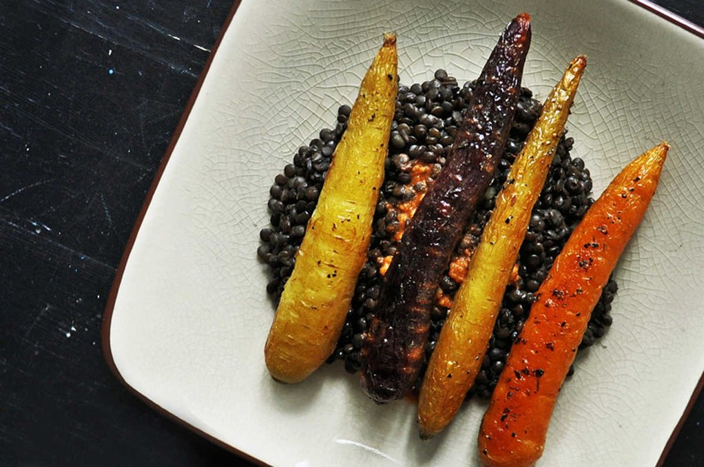

Roast carrots over beluga lentils

This one is straight ripped from Hundred Rabbits' great site Grim Grains.
Roast some carrots, put over cooked lentils, peanut sauce.
Ingredients
- 4 Heirloom carrots per person (you can use long thin ugly 'regular' carrots)
- 1/2 cup beluga lentils per person
- 1 1/2 cup stock for lentils (optional)
- olive oil
- thyme or some other fun spice
Sauce
- peanut butter (or tahini can be a richer alternative)
- soy sauce
- rice vinegar or similar
- sriracha or something similar
- pinch of straight salt if skipping soy sauce
Ingredients
- 4 Heirloom carrots per person (you can use long thin ugly 'regular' carrots)
- 1/2 cup beluga lentils per person
- 1 1/2 cup stock for lentils (optional)
- olive oil
- thyme or some other fun spice
Sauce
- peanut butter (or tahini can be a richer alternative)
- soy sauce
- rice vinegar or similar
- sriracha or something similar
- pinch of straight salt if skipping soy sauce
Directions
Preheat oven to 200c
Wash the carrots and then dress with the olive oil and spices. and Roast them uncut on a tray until they have totally cooked down and caramelized. Up to 25 minutes. You'll want to flip them halfway through.
Cook the beluga lentils in stock (or salted water if you want) and bring to a boil. Cook until soft, probably about 20 minutes. Drain remaining water.
Make the sauce by stiring up the peanut butter with the umami and sour ingredients. You might want more sweet inputs if your peanut butter is unsweetened.